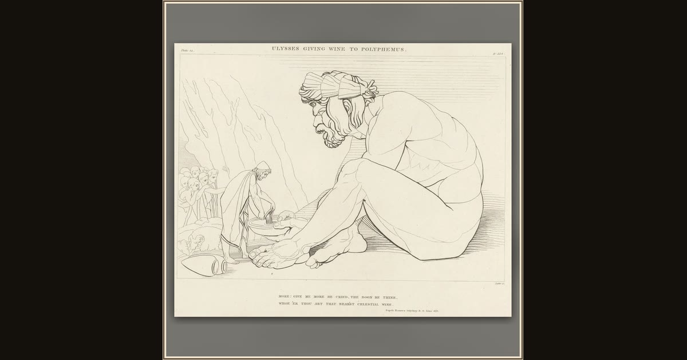

Odysseus schenkt wijn aan Polyphemus (Ulysses giving wine to Polyphemus)
James Parker, after design by John Flaxman (II) · 1805 · rijksmuseum
Odysseus pours wine into a bowl held by the seated Cyclops while his companions wait behind him, matching his account of offering Maronian wine after the meal (410–412) Explore its place in Euripides's Plays, Cyclops, line 427.